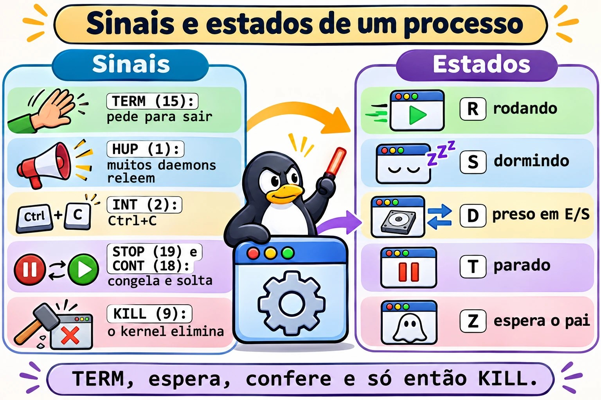
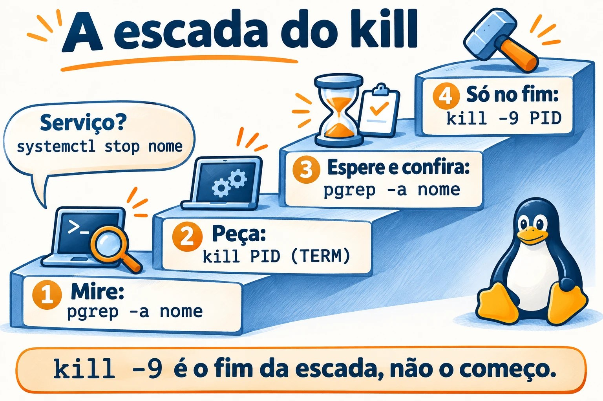
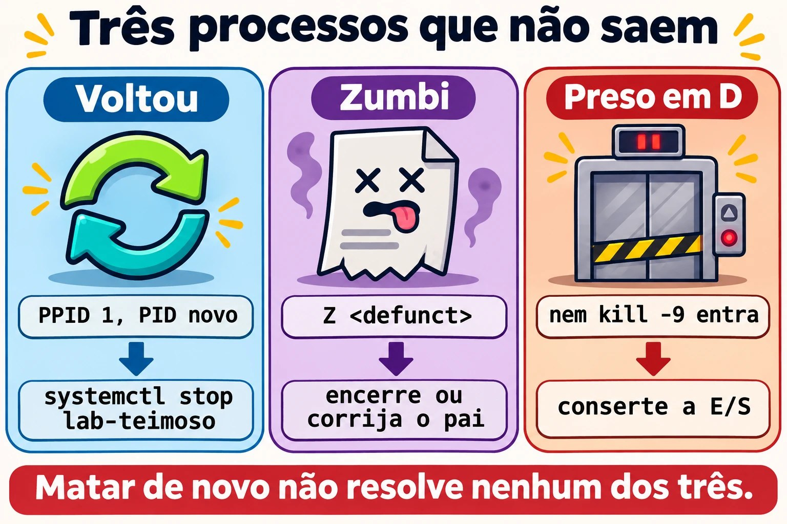

Aula 7.1 · Processos e sinais
Na aula 2.3 você aprendeu a listar um processo e a encerrá-lo. Agora vem o que separa quem resolve de quem reinicia: ler o estado de cada processo, escolher o sinal certo e saber por que alguns processos não morrem, ou voltam logo depois de mortos.
Núcleo desta aula: ler
psetopsem se enganar; explicar os estados R, S, D, T e Z; usar TERM, HUP, STOP, CONT e KILL na ordem certa; mirar com precisão usandopgrepepkill; descobrir de que serviço um PID veio. O resto é aprofundamento.
| Ficha | |
|---|---|
| Módulo | M7 · Processos e desempenho, aula 1 de 3 |
| Quando | Semana 11 |
| Ao final | Você encerra o processo certo do jeito certo e explica por que um processo não morre |
| Pré-requisitos | Aulas 2.3 e 4.2 |
| Tempo | cerca de 2h |
| Snapshots | m7a1-inicio e m7a1-fim na rocky-lab e na debian-lab |
1 · Aquecimento
Responda antes de ler.
- Qual a diferença entre
kill PIDekill -9 PID? Qual deles o programa consegue ouvir? - Para o mesmo processo, o
psmostra 75% de CPU e otopmostra 0%. Os dois podem estar certos? - Um processo aparece com estado
Z. Okill -9resolve?
2 · Por que importa
| O chamado | A resposta errada | O que ela causa |
|---|---|---|
| "O banco está lento, mata o processo" | kill -9 logo de cara | O banco não grava o que tinha em memória e passa a próxima subida recuperando dados |
| "Matei o processo e ele voltou" | Matar de novo, em loop | Quem o sobe é o systemd. O certo é parar o serviço |
| "Tem 40 zumbis no servidor" | kill -9 em todos | Zumbi já morreu. Quem precisa de atenção é o pai |
| "A carga está em 40 e a CPU está parada" | Reiniciar o servidor | Os processos estão presos em disco ou em NFS. A causa continua lá depois do boot |
| "Só queria recarregar a configuração" | systemctl restart no horário de pico | Derruba as conexões, quando um reload (HUP) bastava |
3 · Modelo mental
Um processo é um funcionário, e um sinal é um bilhete entregue a ele. TERM diz "feche o que está fazendo e vá embora", e ele pode arrumar a mesa antes. HUP diz "releia as instruções". STOP e KILL não são bilhetes: quem age é o kernel, que congela ou retira o funcionário sem perguntar. Um zumbi é a ficha de quem já saiu, parada na mesa do chefe até ele assinar. Quem está em D está no elevador parado: nenhum bilhete chega lá até a porta abrir.
kill -TERM ──► o programa decide: limpa, grava e sai (saída 143 se não tratar)
kill -HUP ──► muitos daemons: relê a configuração
kill -INT ──► o mesmo que Ctrl+C (saída 130)
kill -STOP ──► o kernel congela (estado T) ◄── kill -CONT descongela
kill -KILL ──► o kernel elimina, sem aviso (saída 137)
R rodando S dormindo, acorda com sinal D preso em E/S, nem KILL entra
T parado Z terminou, espera o pai ler a saída I thread ociosa do kernel

Ponte Windows
| No Windows | No Linux | Onde a comparação engana |
|---|---|---|
Gerenciador de Tarefas, Get-Process | top, ps | O ps é uma foto. A sua coluna %CPU é a média da vida inteira do processo |
taskkill /PID n | kill n (TERM) | O kill não serve só para matar: ele entrega qualquer sinal |
taskkill /F, Stop-Process -Force | kill -9 | Equivalentes na brutalidade: nenhum dá chance de limpar |
| Árvore de processos do Process Explorer | ps -ef --forest, pstree -p | No Linux todo processo tem um pai que recolhe a saída dele. É daí que vem o zumbi |
| Serviço com recuperação "Reiniciar o serviço" | Restart= no unit | É o mesmo motivo do "matei e voltou" |
4 · O essencial
Ler sem se enganar
| Quero... | Comando |
|---|---|
| Ver todos, com a família | ps -ef --forest |
| Escolher as colunas e ordenar | ps -eo pid,ppid,stat,ni,pcpu,pmem,etime,comm --sort=-pcpu | head |
| Ver a família de um PID até o PID 1 | pstree -ps PID |
| Ver a CPU de agora | top e, para script, top -b -n2 -d2 -p PID |
| Ver carga e tempo ligado | uptime |
| Ver memória | free -h |
| Repetir um comando a cada 2 segundos | watch -n 2 'ps -eo stat | sort | uniq -c' |
| Descobrir o serviço de um PID | systemctl status PID |
| Ver o estado detalhado | grep -E 'State|PPid|VmRSS' /proc/PID/status |
| Ver o executável e a pasta | ls -l /proc/PID/exe /proc/PID/cwd |
| Ver o que ele tem aberto | ls -l /proc/PID/fd |
Teclas do top: P ordena por CPU, M por memória, c mostra o comando inteiro, 1 abre por núcleo, H mostra threads, k manda sinal, q sai.
A carga do uptime conta os processos que querem CPU e os que estão em D, na média de 1, 5 e 15 minutos. Compare com nproc. Carga alta com CPU ociosa aponta para E/S, não para falta de CPU.
Os sinais que você usa
| Sinal | Número | Para quê | Dá para tratar? |
|---|---|---|---|
| HUP | 1 | Em daemons, reler a configuração. Também avisa que o terminal caiu | Sim |
| INT | 2 | Ctrl+C | Sim |
| KILL | 9 | Eliminar, em último caso | Não |
| TERM | 15 | Pedido normal de saída. É o padrão do kill | Sim |
| CONT | 18 | Descongelar | Sim, e ele acorda de qualquer jeito |
| STOP | 19 | Congelar | Não |
A ordem de sempre: TERM, espera alguns segundos, confere, e só então KILL. Num serviço, prefira systemctl stop ou systemctl reload, porque o systemd sabe como aquele serviço deve parar.


A coluna STAT
A primeira letra é o estado. As seguintes são detalhes: s líder de sessão, + em primeiro plano, l com várias threads, < prioridade alta, N prioridade baixa.
Mirar com precisão
| Quero... | Comando |
|---|---|
| Conferir antes de atirar | pgrep -a nome |
| Procurar na linha de comando inteira | pgrep -af 'texto' |
| Nome exato | pgrep -x sleep |
| De um usuário | pgrep -u student -a |
| Filhos de um PID | pgrep -P PID |
| Enviar o sinal com o mesmo critério | pkill, com as mesmas opções |
Por nome exato, com psmisc | killall -e nome |
Regra: todo pkill nasce como pgrep -a. Olhe a lista, depois troque a palavra.
Rocky × Debian
| Rocky | Debian | |
|---|---|---|
pstree, killall, fuser | Pacote psmisc | Pacote psmisc |
ps, top, free, pgrep | Pacote procps-ng | Pacote procps |
| Nome do serviço de SSH | sshd | ssh |
5 · Lab guiado
Passo 0 · Snapshots e preparo. No Proxmox: qm snapshot 201 m7a1-inicio e qm snapshot 202 m7a1-inicio. Na rocky-lab:
sudo dnf install -y psmisc
mkdir -p ~/lab71 && cd ~/lab71Passo 1 · Ler o que está rodando.
ps -ef --forest | head -n 25
ps -eo pid,ppid,stat,ni,pcpu,pmem,etime,comm --sort=-pcpu | head
pstree -ps $$
uptime
nproc
free -hO pstree -ps $$ mostra a sua linhagem: systemd, sshd, bash. No free -h, olhe a coluna available, que é o que os programas ainda podem usar.
Passo 2 · A mentira do %CPU. O processo abaixo gasta CPU por 10 segundos e depois dorme.
bash -c 'fim=$((SECONDS+10)); while [ $SECONDS -lt $fim ]; do :; done; sleep 300; true' &
GASTOU=$!
sleep 13
ps -o pid,pcpu,etime,comm -p $GASTOU
top -b -n2 -d2 -p $GASTOU | awk 'NF' | tail -n 1
pkill -P $GASTOUO ps mostra algo perto de 75%: é a média desde que o processo nasceu. O top mostra 0, porque compara duas amostras. Para saber quem consome CPU agora, use o top. O -n2 existe porque a primeira amostra do top também é uma média.
O pkill -P encerra o sleep filho, e o bash termina em seguida. Um kill $GASTOU mataria só o bash e deixaria o sleep órfão, vivo por cinco minutos.
Passo 3 · Um serviço de brinquedo. Crie um script que responde a sinais.
cat > ~/lab71/servico.sh <<'EOF'
#!/bin/bash
trap 'echo "$(date +%T) HUP: relendo a configuracao"' HUP
trap 'echo "$(date +%T) TERM: salvando e saindo"; exit 0' TERM
while true; do
echo "$(date +%T) trabalhando"
sleep 2
done
EOF
chmod +x ~/lab71/servico.sh
./servico.sh > servico.log &
S=$!Passo 4 · Olhar por dentro, em /proc.
grep -E 'State|PPid|VmRSS|Threads' /proc/$S/status
ls -l /proc/$S/exe /proc/$S/cwd
tr '\0' ' ' < /proc/$S/cmdline; echo
ls -l /proc/$S/fdO exe aponta para /usr/bin/bash, porque é o bash que roda o script. No fd, o descritor 1 aponta para servico.log: é assim que você descobre para onde um processo está escrevendo, mesmo sem saber como ele foi iniciado.

Passo 5 · Mandar sinais.
kill -HUP $S; sleep 3; tail -n 3 servico.log
kill -STOP $S; ps -o pid,stat,comm -p $S
date +%T; sleep 6; tail -n 1 servico.log
kill -CONT $S; sleep 3; tail -n 1 servico.log
kill -TERM $S; sleep 3; tail -n 2 servico.log
wait $S; echo "saida=$?"O HUP aparece no log e o programa continua. Durante o STOP o estado vira T, e o horário no log para. Com o TERM, o script grava salvando e saindo e termina com saida=0. Agora o contraste:
./servico.sh > servico.log &
S=$!
sleep 3
kill -9 $S
wait $S; echo "saida=$?"
tail -n 2 servico.logSem salvando e saindo e com saida=137, que é 128 + 9. Quando um script ou o systemd mostrar 137 ou 143, você sabe que o processo morreu por KILL ou por TERM.
Passo 6 · Mirar antes de atirar.
sleep 5001 &
sleep 5002 &
pgrep -a sleep
pgrep -af 'sleep 5001'
pkill -f 'sleep 5001'
pgrep -a sleep
pkill -x sleep
pgrep -a sleepSó depois de ver a lista, troque pgrep por pkill. O -f procura na linha inteira e o -x exige o nome exato.
Passo 7 · De qual serviço veio esse PID?
P=$(systemctl show -p MainPID --value sshd)
ps -o pid,ppid,etime,cmd -p $P
systemctl status $P --no-pager | head -n 4
cat /proc/$P/cgroupO systemctl status aceita um PID e responde a qual unit ele pertence. Guarde isso: é o primeiro comando diante de um processo desconhecido.
Passo 8 · debian-lab. Instale o psmisc e repita os passos 1 e 7, trocando sshd por ssh. Os comandos e os sinais são os mesmos.
Decida 1
O processo do banco de dados está a 100% de CPU e o sistema de gestão parou de responder. O gerente pede pressa. O que você faz primeiro?
A) kill -9 no processo, para liberar logo. B) Reinicia o servidor. C) Anota o que está acontecendo com top e ps, tenta systemctl stop e deixa o serviço terminar. Só usa KILL se ele não parar dentro do tempo combinado.
Marque uma opção antes.
| Se você marcou | Resultado | Por quê |
|---|---|---|
| A | Risco de perder dados | O banco não termina o que tinha em memória e a próxima subida faz recuperação |
| B | O mesmo risco, para todos os serviços | Você apaga as evidências e derruba o que estava funcionando |
| C | Certo | O systemd manda TERM e, passado o tempo limite, KILL. Você ainda fica com a evidência para achar a causa |
Para fixar: kill -9 é o fim da escada, não o começo.
Decida 2
Carga em 40, num servidor de 8 núcleos. O top mostra CPU quase toda ociosa. O que você olha?
A) Quem está em primeiro no top por CPU. B) ps -eo pid,stat,wchan:20,comm | awk '$2 ~ /^D/'. C) Aumenta a memória da VM.
Marque uma opção antes.
| Se você marcou | Resultado | Por quê |
|---|---|---|
| A | Não acha nada | Quem está em D não usa CPU, mas conta na carga |
| B | Certo | Mostra quem está preso e, no wchan, em que função do kernel. Costuma ser disco ou NFS |
| C | Gasto sem efeito | O gargalo não é memória |
Para fixar: carga alta com CPU parada é sinal de processos esperando E/S.
6 · Quebre e conserte


Quebra 1 · Matei e voltou
sudo systemd-run --unit=lab-teimoso -p Restart=always -p RestartSec=2 sleep 5000
sleep 1
sudo kill -9 "$(pgrep -f 'sleep 5000')"
sleep 4
pgrep -af 'sleep 5000'Sintoma: o processo está lá de novo, com outro PID.
Diagnóstico:
P=$(pgrep -f 'sleep 5000')
ps -o pid,ppid,etime,cmd -p $P
systemctl status $P --no-pager | head -n 3O PPID é 1 e o etime é de poucos segundos. O status mostra o nome da unit.
Conserto: sudo systemctl stop lab-teimoso. Confira com pgrep -af 'sleep 5000', que não deve mostrar nada.
Na vida real: antes de matar pela segunda vez, pergunte quem subiu o processo de volta. Pode ser o systemd, o cron, um contêiner ou um script de supervisão.
Quebra 2 · O zumbi imortal
(sleep 1 & exec sleep 300) &
PAI=$!
sleep 2
ps -o pid,ppid,stat,comm --ppid $PAI
Z=$(ps -o pid= --ppid $PAI)
kill -9 $Z
sleep 1
ps -o pid,ppid,stat,comm -p $ZSintoma: estado Z, com <defunct>, e o kill -9 não muda nada.
Diagnóstico: o processo já terminou. Sobrou só a entrada na tabela, esperando o pai ler o código de saída. Aqui o pai é um sleep, que nunca faz isso.
Conserto:
kill $PAI
sleep 1
ps -o pid,ppid,stat,comm -p $ZO filho passa a ser adotado por um processo que recolhe a saída, e a entrada some.
Na vida real: um zumbi não gasta CPU nem memória, só uma entrada na tabela. Poucos e estáveis são inofensivos. Muitos e aumentando indicam um pai com defeito, e o conserto é reiniciar ou corrigir esse pai.
Quebra 3 · Preso em D (narrativa)
O servidor NFS caiu. Um ls /mnt/nfs não volta, Ctrl+C não funciona, kill -9 não funciona e a carga sobe sem parar.
Diagnóstico: ps -eo pid,stat,wchan:20,comm | awk '$2 ~ /^D/' e journalctl -k -n 50, que costuma mostrar nfs: server ... not responding.
Conserto: trazer o servidor NFS de volta. O sinal fica na fila e é entregue quando a operação termina. Em último caso, umount -f ou umount -l, sabendo que escritas pendentes podem se perder. Se o disco local é que falhou, a saída pode ser o reboot.
Para fixar: nenhum sinal alcança um processo em D. Procure a causa na E/S.
Limpeza
sudo systemctl stop lab-teimoso 2>/dev/null
pkill -f servico.sh
pkill -x sleep
pgrep -af 'servico|sleep 5'O último comando não deve mostrar nada.
7 · Armadilhas
| Armadilha | O que acontece | Como evitar |
|---|---|---|
Confiar no %CPU do ps | É a média da vida do processo | Use top, com duas amostras |
kill -9 como primeira opção | O programa não limpa nem grava | TERM, espera, confere, KILL |
pkill -f com texto curto | Acerta o que você não queria. pkill -f student derruba a sua própria sessão SSH | Rode pgrep -af antes e use um texto longo |
pgrep nome com nome longo | O nome do processo tem no máximo 15 caracteres | Use -f |
ps aux | grep nome | O próprio grep aparece na lista | Use pgrep -a |
| Matar zumbi | Não muda nada | Olhe o PPID e trate o pai |
| Matar um processo de serviço | Ele volta, se o unit tiver Restart= | systemctl status PID, depois systemctl stop |
| Achar que HUP sempre recarrega | Um programa que não trata HUP morre | Confira no man ou use systemctl reload |
| Copiar número de sinal de outro sistema | Em outras arquiteturas alguns números mudam | Use nomes: -TERM, -HUP, -KILL |
8 · Quiz
Responda sem olhar. O gabarito está no fim da aula.
- Quais dois sinais o programa não consegue tratar?
- Um script termina com código 143. O que aconteceu?
- O que está sendo esperado em um processo no estado Z? E no estado D?
- Como descobrir, em um comando, de qual unit veio um PID?
- Por que
psetoppodem discordar sobre CPU? - Antes de um
pkill -f 'backup', qual comando você roda?
9 · Cola
Para saber de cor:
| Quero... | Comando |
|---|---|
| Quem gasta CPU agora | top, tecla P |
| Quem gasta memória | top, tecla M |
| Listar com critério | pgrep -af 'texto' |
| Pedir para sair | kill PID |
| Forçar, em último caso | kill -9 PID |
| Unit de um PID | systemctl status PID |
| Presos em E/S | ps -eo pid,stat,wchan:20,comm | awk '$2 ~ /^D/' |
| Zumbis | ps -eo pid,ppid,stat,comm | awk '$3 ~ /^Z/' |
Para consultar:
| Quero... | Comando |
|---|---|
| Lista de sinais | kill -l |
| Testar se o PID existe | kill -0 PID; echo $? |
| Árvore | ps -ef --forest, pstree -ps PID |
| Sinal para um serviço | sudo systemctl kill -s HUP UNIT |
| Executável e pasta | ls -l /proc/PID/exe /proc/PID/cwd |
| Arquivos abertos | ls -l /proc/PID/fd |
| Variáveis do processo | sudo tr '\0' '\n' < /proc/PID/environ |
| Contar por estado | ps -eo stat= | cut -c1 | sort | uniq -c |
Flashcards:
- TERM → pedido; o programa pode limpar. É o padrão.
- KILL e STOP → o kernel age; o programa não pode tratar.
- 137 e 143 → 128 + 9 e 128 + 15.
- Z → já morreu; trate o pai.
- D → preso em E/S; nenhum sinal entra.
- Matou e voltou →
systemctl status PID.
10 · Checklist e fechamento
- [ ] Explico os estados R, S, D, T e Z
- [ ] Sei por que
psetopdiscordam sobre CPU - [ ] Uso a sequência TERM, espera, confere, KILL
- [ ] Rodo
pgrep -aantes de todopkill - [ ] Descubro de que serviço veio um PID
- [ ] Sei o que fazer com zumbis e com processos em D
- [ ] Leio 137 e 143 como sinais
Último exercício, sem olhar a aula: na debian-lab, escreva um script que grave tchau em um arquivo ao receber TERM. Rode em segundo plano, mande TERM e prove pelo arquivo. Repita com KILL e explique a diferença.
Snapshot de fim (no Proxmox):
qm snapshot 201 m7a1-fim
qm snapshot 202 m7a1-fim11 · Na vida real
Missão, só leitura. Num servidor Linux que você administre (ou com autorização), rode apenas:
uptime
nproc
free -h
ps -eo stat= | cut -c1 | sort | uniq -c
ps -eo pid,ppid,stat,comm | awk '$3 ~ /^Z/'
ps -eo pid,stat,wchan:20,comm | awk '$2 ~ /^D/'
ps -eo pid,ppid,pmem,etime,comm --sort=-pmem | headPerguntas para responder:
- A carga de 15 minutos é maior que o número de núcleos?
- Quantos processos estão em cada estado? Existe algum em D ou Z?
- Se há zumbis, quem é o pai de cada um?
- Quais são os três maiores em memória, e de que unit vem cada um? Consulte com
systemctl status PID.
Diário: anote a resposta da 4. Não envie nenhum sinal.
Amanhã, sem olhar: escreva os cinco sinais da aula, com número, e diga quais o programa não pode tratar.
12 · Aprofundar quando quiser
man 7 signal: a lista completa e o comportamento padrão de cada sinal.strace -p PID: ver em que chamada de sistema um processo está parado.lsof -p PIDefuser -v ARQUIVO: quem está segurando um arquivo ou uma porta.KillMode=eTimeoutStopSec=: como o systemd para um serviço e quanto tempo espera antes do KILL.pidstat(pacotesysstat): consumo por processo ao longo do tempo.
DeepTutor (http://10.1.0.149:3782, KB "Curso Linux Sysadmin"):
!explica a diferença entre os estados S e D de um processo!feynman o que é um processo zumbi e por que kill não resolve!quiz Aula 7.1, 5 perguntas sobre sinais e estados
Gabarito comentado
Aquecimento
- O
kill PIDmanda TERM, que o programa pode tratar para sair com calma. Okill -9manda KILL, que nem chega ao programa: o kernel o elimina. - Sim. O
%CPUdopsé a média desde o início do processo. Otopmede o intervalo entre duas amostras. Um processo que trabalhou muito e agora dorme mostra exatamente isso. - Não. O processo já terminou, e o sinal não tem quem receba. É preciso que o pai leia a saída ou termine.
Quiz
- KILL (9) e STOP (19).
- O processo morreu por TERM: 128 + 15.
- No Z, espera-se que o pai leia o código de saída (
wait). No D, o processo espera uma operação de E/S terminar no kernel. systemctl status PID.- Porque o
pscalcula a média da vida inteira do processo, e otopcompara duas amostras próximas. pgrep -af 'backup', para ver exatamente o que será atingido.